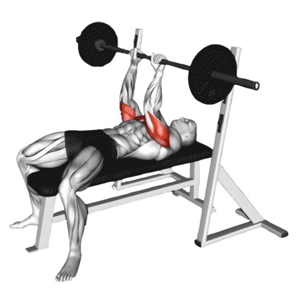
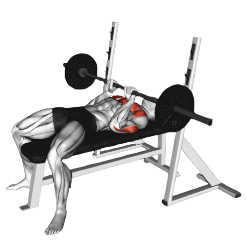

클로즈 그립 벤치프레스

- 어깨 너비보다 좁은 그립으로 바벨을 잡는다. 보통 15~20cm 간격이 적당하며, 지나치게 좁으면 손목과 팔꿈치에 부담이 갈 수 있으니 본인에게 맞는 간격을 찾는 게 중요하다.
- 바벨을 천천히 가슴 중앙을 향해 내린다. 이때 팔꿈치가 옆으로 퍼지지 않도록 약간 몸쪽으로 당기는 느낌으로 내리면 삼두근에 더 집중된다.
- 이때 호흡은 마신다.
- 삼두근과 가슴 근육의 힘으로 바벨을 밀어 올린다. 이때 팔꿈치는 너무 바깥으로 벌리지 말고 몸쪽을 향하게 하여 삼두근에 자극이 집중되도록 한다.
- 바벨을 완전히 밀어올린 순간에 삼두근이 최대한 수축되도록 신경 쓴다.
- 이때 호흡은 뱉는다.

주의사항
- 손목이 꺾이지 않도록 하고 팔꿈치는 바벨과 일직선이 되도록 유지한다.
- 속도 조절에 신경 써 삼두근이 최대한 자극을 받을 수 있도록 천천히 진행한다.
- 지나치게 무거운 중량은 잘못된 자세를 유발할 수 있어 부상의 원인이 된다.
운동부위 및 효과
- 삼두근, 대흉근, 전면 어깨 근육
- 삼두근을 집중적으로 자극하여 팔 뒤쪽 근육이 두꺼워지고 강해진다.